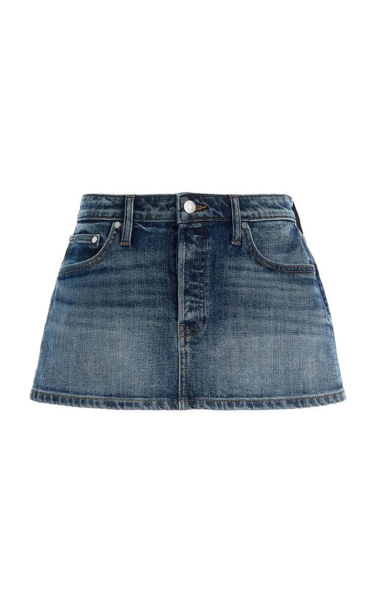
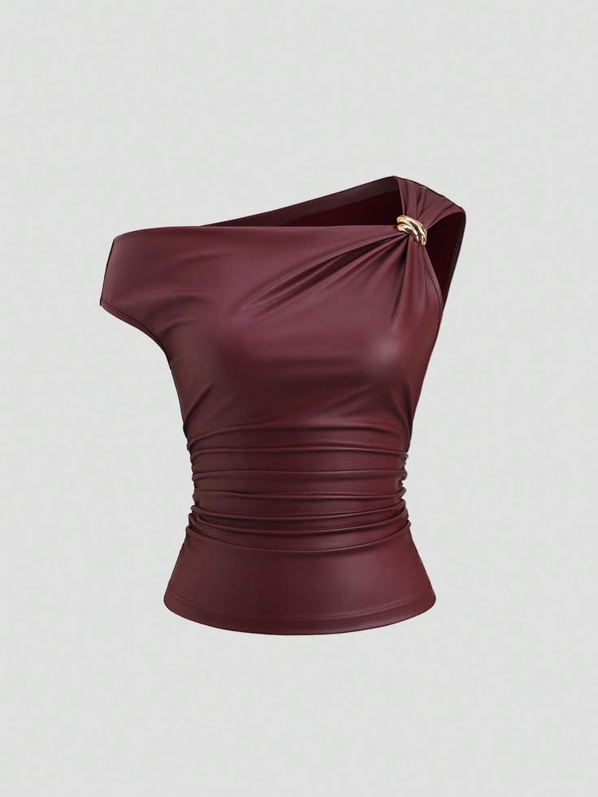

₱699
VIEW PRODUCT →

₱799
VIEW PRODUCT →
THREAD & TONE turns simple clothing into creative products through design, storytelling, and expressive language. Every piece represents how creativity can become part of a modern creative economy.
THREAD & TONE / 01
₱699
Meet the Denim Mini Skirt, a timeless piece with a youthful twist. Its classic denim texture gives every outfit a confident character, while its simple design makes it easy to style for different occasions.
This skirt is more than just fabric and thread— it is a canvas for creativity. Its blue denim color brings a cool and casual feeling, making every outfit feel fresh and expressive.
Metaphor:
"The Denim Mini Skirt is a
canvas for creativity."
Personification:
"Let the denim
tell your story wherever you go."
Simile:
"Its classic design is
like a blank page waiting for your
personal style."
Alliteration:
"Cool, casual, and confident."
Repetition:
"Wear it. Style it. Own it."
The Denim Mini Skirt demonstrates how an ordinary clothing item can become a creative product through design, branding, and storytelling. Its product description uses literary techniques to make the product more memorable and appealing to customers.
THREAD & TONE / 02
₱799
Bold yet graceful, the Burgundy One-Shoulder Top is designed for those who want their fashion to make a statement. Its deep burgundy shade adds a rich and elegant touch to any outfit.
The one-shoulder design creates an artistic silhouette that feels modern and expressive. It is a small piece with a big personality.
Metaphor:
"This top is
a spark of confidence."
Personification:
"Its burgundy color
whispers elegance."
Simile:
"The rich color shines
like a ruby."
Alliteration:
"Bold, beautiful, and brilliant."
Repetition:
"Be bold. Be bright. Be you."
This product shows how fashion, creativity, and communication can work together as part of the creative economy. The unique design becomes more appealing when supported by creative branding and expressive product descriptions.